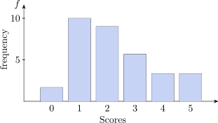
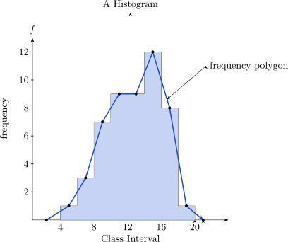

1 Introduction
\(*\) Statistics is a science that deals with the methods of
- Data collection
- Data presentation
- Data analysis
- Interpretation of results
- and above all making decisions based on the data
\(*\) Data is information
There are four types of data:
-
Nominal Data:
Used for labelling variables without any quantitative value.
Notice that all these labels are mutually exclusive and none of them have numerical significance.- What is your nationality?
- Where do you live?
-
Ordinal Data
With ordinal data it is the order of the values that matters, but the difference between each one is not really known.- How do you feel today?
- Interval Data
Numerical data in which we know not only the order but also the exact difference between the values. -
Ratio Data
These tell us the order and the exact difference between values, and they have a true zero. There are two types of quantitative data that we are going to study:- Discrete data
- Continuous data
In order to develop data analysis skills, it is important to keep the following three points in mind:
- For most data sets, there is more than one appropriate and informative way to plot the data.
- It is valuable to see the same data plotted in several ways, both for the purpose of learning more about data, and because this will help to gain experience in choosing appropriate method of data display and analysis. Professionals routinely do this in order to explore patterns in their data.
- Creative insights are an asset to good graphing and data analysis. If you invent a different
kind of graph that successfully makes a point about the data that can be interpreted by
someone else, then the graph is useful.
1.0.2 Continuous Data
1.0.3 Histogram With Unequal Class Intervals
1.0.4 Data Collection
1.0.5 Measures Of Central Tendencies
1.0.6 Measure Of Dispersion
1.0.7 Range
1.0.8 Standard Deviation
1.0.9 Mean Deviation
1.0.10 Quartiles
1.0.11 Percentiles
1.0.12 Properties of \(E(X)\)
1.0.13 Properties of Variance
1.0.14 Properties of Covariance (Cov\((X,Y)\))
1.1 Moments
1.1.1 Moment Ratios
1.1.2 Skewness
1.2 Practice problems
1.0.1 Discrete Data
Is data that can take any particular value.
Example
- Marks obtained in a test
- Number of passengers in a bus
- Ages of students in a class.
Presentation of discrete data are:
- Pie chart
- Bar chart
- Pictograph
Example
| 24 | 42 | 23 | 14 | 20 | 28 | 72 | 13 | 34 |
| 60 | 9 | 4 | 18 | 15 | 13 | 8 | 10 | 51 |
The total scores of 30 students out of 5 are given below:
| 3 | 1 | 3 | 2 | 2 | 1 | 1 | 3 | 1 | 1 | 5 | 3 | 3 | 2 | 0 |
| 4 | 2 | 1 | 2 | 5 | 3 | 1 | 2 | 2 | 1 | 1 | 2 | 4 | 2 | 1 |
We can present this type of data in a table called frequency table.
The difference between the lowest value and highest value is 5
| Score | Tally Mark | \(f\) frequency |
| 0 | 1 | |
| 1 | 10 | |
| 2 | 9 | |
| 3 | 6 | |
| 4 | 2 | |
| 5 | 2 | |
Bar Chart

1.0.2 Continuous Data
This is data that assumes any value.
Examples:
- Age
- Time
- Weight
- Height
To present continuous data we also use
- Line Plots
- Histogram
- Frequency polygon
- Ogive curve (Cumulative frequency curve)
- Steam and Leaf plots
- Two-Way tables
- Box plots
- Scatter plots
- Time-Series plots
Line Plots
- Analysis begins by trying to get a good “picture” of the data.
- A line plot is simply a bar plot (bar graph) where the categories on which we collect data
are integers \((0,1,2,3,\cdots ,\cdots )\).
The method of construction:
- Step 1: Find the smallest and largest values in the data set.
- Step 2: Draw a real number line that encompasses these values.
- Step 3: Place a mark on the number line corresponding to each data point.
Example
A line plot based on a test:
Frequency, Relative Frequency, and Cumulative Frequency
- A frequency is the number of times a given datum occurs in a data set.
-
A relative frequency is the fraction of times an answer occurs. To find the relative frequencies, divide each frequency by the total number in the sample.
Relative frequencies can be written as fractions, percents, or decimals.Data Value Frequency Relative Frequency 2 3 3/20 or 0.15 3 5 5/20 or 0.25 4 3 3/20 or 0.15 5 6 6/20 or 0.30 6 2 2/20 or 0.10 7 1 1/20 or 0.05 - The sum of the relative frequency column is 20/20, or 1.
-
Cumulative relative frequency is the accumulation of the previous relative frequencies.
Cumulative Relative Data Value Frequency Relative Frequency Frequency 2 3 3/20 or 0.15 0.15 3 5 5/20 or 0.25 0.15 + 0.25=0.40 4 3 3/20 or 0.15 0.40 + 0.15=0.55 5 6 6/20 or 0.30 0.55 + 0.30=0.85 6 2 2/20 or 0.10 0.85 + 0.10=0.95 7 1 1/20 or 0.05 0.95 + 0.05=1.00
Note:
Because of rounding, the relative frequency column may not always sum to one and the last entry in
the cumulative relative frequency column may not be one. However, they each should be close to
one.
We can arrange data into groups or take them as individual values.
If we consider 5 values, say 3, 5, 0, 2, 6.
In grouping data, we can either take individual values or arrange then in intervals called class
interval.
| Value | Tally Marks | \(f\) |
| 0 | 5 | |
| 1 | 2 | |
| 2 | 1 | |
| 3 | 3 | |
To determine class interval, find the range and divide by 10
| Class | Tally | \(f\) | True Class |
| Interval | Marks | Limits | |
| \(1-5\) | 1 | \(0.5-5.5\) | |
| \(6-10\) | 2 | \(5.5-10.5\) | |
| \(11-15\) | 3 | \(10.5-15.5\) | |
| \(16-20\) | 1 | \(15.5-20.5\) | |
| \(21-25\) | 2 | \(20.5-25.5\) | |
| \(26-30\) | 1 | \(25.5-30.5\) | |
Choice Of Class Interval
It is important that the class interval in chosen so that the graph gives a clear representation of the
Data. Choice of too large a class interval will lead to loss of details on the other hand too small a class
interval would destroy the originality of the Data. A Convenient rule of thumb is to choose a class
interval so that the Average frequency is about 5.
i.e Number of classes = \(\dfrac {1}{5}\times \) Total frequency.
| Class | \(f\) | Cumulative | Middle Point |
| Interval | frequency | of the interval | |
| \(4.0-6\) | 1 | 1 | 5 |
| \(6.0-8\) | 3 | 4 | 7 |
| \(8.0-10\) | 7 | 11 | 9 |
| \(10.0-12\) | 9 | 20 | 11 |
| \(12.0-14\) | 9 | 29 | 13 |
| \(14.0-16\) | 12 | 41 | 15 |
| \(16.0-18\) | 8 | 49 | 17 |
| \(18.0-20\) | 1 | 50 | 19 |
Construct a Histogram using the given table:

1.0.3 Histogram With Unequal Class Intervals
Grouped frequency table are sometimes given with unequal class intervals because a particular range
of the variate may be of special interest.
If you do this, care has to be exercised in calculating the true class limits as age in the table below is
measured differently from other variates. e.g \(18-20\) includes people who are just 18 to those one day less
than 21.
Since the eyes compares area and not height in a histogram the areas of the blocks must be
proportional to class frequency
\(\therefore \) height of block \(\alpha \) \(\dfrac {\text {class frequency}}{\text {class width}}\)
The ratio \(\dfrac {\text {class frequency}}{\text {class width}}\) is known as the frequency density.
| Class | True Class | Class | frequency | frequency | Relative |
| Interval | Limit | Width | \((.000)\) | Density | Frequency |
| \(16-17\) | \(16-18\) | 2 | 4 | 2 | \(8.316\times 10^{-1}\) |
| \(18-20\) | \(18-21\) | 3 | 73 | 24.33 | 0.1518 |
| \(21-24\) | \(21-25\) | 4 | 185 | 46.25 | 0.3846 |
| \(25-29\) | \(25-30\) | 5 | 104 | 20.8 | 0.2162 |
| \(30-34\) | \(30-35\) | 5 | 34 | 6.8 | 0.0707 |
| \(35-44\) | \(35-44\) | 10 | 33 | 3.3 | 0.0686 |
| \(45-54\) | \(45-55\) | 10 | 22 | 2.2 | 0.0457 |
| 55 and above | 55 and above | 20 | 26 | 1.3 | 0.0540 |
| \(55-75\) | \(55-75\) | ||||
Construct a (1) Histogram (2) Ogive curve
Stem-and-Leaf Plots
A stem-and-leaf plot provides an alternative to a line plot or histogram for obtaining a picture of the
data distribution when data can be represented as integer (counting) numbers.
The method of construction:
\(\bullet \) Find the largest and smaller scores. They are best explained in the context of an example.
Example
Make a stem and leaf plot of the algebra test scores given below.
| 56 | 65 | 98 | 82 | 64 | 71 | 78 | 77 | 86 |
| 69 | 70 | 80 | 92 | 76 | 82 | 85 | 91 | 92 |
| 95 | 99 | 91 | 73 | 59 |
- Since the data ranges from 56 to 96, the stems range from 5 to 9.
- To plot the data, make a vertical list of the stems.
- Each number is assigned to the graph by pairing the units digit, or leaf, with the correct stem.
- The score 56 is plotted by placing the units digit, 6, to the right of stem 5.
| Stem | |||||||
| 5 | 6 | 9 | |||||
| 6 | 4 | 5 | 9 | ||||
| 7 | 0 | 1 | 3 | 6 | 7 | 8 | |
| 8 | 0 | 2 | 2 | 5 | 6 | ||
| 9 | 1 | 1 | 2 | 2 | 5 | 8 | 9 |
- The stem-and-leaf represents a histogram when turned vertically.
- The lowest score on the algebra test is 56.
- The highest score on the algebra test is 99.
- The interval in which most students scored is 90 to 99.
Data with more than two digits can be rounded to two digits before plotting or can be truncated to two digits. For a stem and leaf plot, you would truncate everything after the second digit.
- The number 355 would round to 36.
- The number 355 would truncate to 35.
Box Plots
- Provides a visual representation of a five-number summary of data, consisting of the median (the midpoint of the data range), the upper and lower quartiles (the numbers below the highest quarter of the data and above the lowest quarter, respectively) and largest and smallest values (the extremes).
- Box plots are particularly useful for comparing distributions of the results from several
experimental conditions.
“Because box plots are based on simple summaries, they can be used with fairly young children
certainly third graders”
Constructing the graph:
- Determine the five-number summary (lower extreme, lower quartile, median,upper quartile and upper extreme).
- Construct a number line that includes the extremes.
- Mark the position of the five numbers in the summary a little above the number line.
- Draw a narrow box that connects the quartiles. Draw a line through the box at the median.
Draw lines from the ends of the boxes to the extremes (“Whiskers”).
Example
| 49 | 58 | 57 | 43 | 46 | 35 | 42 | 56 | 50 |
| 47 | 45 | 45 | 43 | 51 | 36 | 41 | 50 | 48 |
The five number summary. Written in the order of the lower extreme, lower quartile, median, upper quartile, and upper extreme is:
| 34 | 41 | 45.5 | 50 64 |
A box plot of these numbers, plotted above the real number line for reference, would look like the following:
1.0.4 Data Collection
Our interest in this course is quantitative data, we consider whether this is primary data or secondary
data.
\(*\) Primary data is the data that is collected from the source and the methods of collecting data are:
- Questionnaires
- Oral or personal interview (should be guided)
- Observation
- Experimental
\(*\) Secondary Data comes from
- News paper
- Journals
1.0.5 Measures Of Central Tendencies
Central tendency: of a distribution is an estimate of the ”center” of a distribution of values.
There are three major types of estimates of central tendency
- Mean
- Median
- Mode
-
Mean
The mean is probably the most commonly used method of describing central tendency.
Definition
The mean is the central value of the given observation. \begin {align*} &\textbf {Notation}\\ \sum \hspace {0.3cm}&-\hspace {0.3cm}\text {Sum}\\\ \overline {X}\hspace {0.3cm}&-\hspace {0.3cm}\text {Mean}\\ n\hspace {0.3cm}&-\hspace {0.3cm}\text {Number of observations} \end {align*}\[\overline {X}=\frac {1}{n}\sum _1^nX\hspace {1cm}\text {Ungrouped Data}\] The mean is determined by summing all the observations and dividing by the number of observations.
Example
Find the mean of the following values 0, 5, 2, 3, 5 \[\overline {X}=\frac {1}{n}\sum ^5_1X=\frac {0+5+2+3+5}{5}\hspace {0.5cm}\implies \hspace {0.5cm}\overline {X}=3\]
Calculations of the mean from a grouped data \[\overline {X}=\frac {\sum f(X)}{\sum f}\hspace {1cm}\text {Grouped Data}\]
Example
\(\hspace {1cm}\implies \hspace {0.5cm}\sum f=8\)\(X\) \(f\) \(f(X)\) 0 3 0 1 2 2 2 2 4 3 1 3 8 \(\sum f(X)=9\) \[\overline {X}=\frac {\sum f(X)}{\sum f}=\frac {9}{8}\]
C.I \(f\) Middle point \(X\) \(f(X)\) \(1-5\) 1 3 3 \(6-10\) 3 8 24 \(11-15\) 2 13 26 \(16-20\) 1 18 18 Example
Calculate the mean for the following data:-
15, 20, 21, 20, 36, 15, 25, 15
Solution
\(\displaystyle {\overline {X} =\frac {1}{n}\sum _1^nX=\frac {15+20+21+20+36+15+25+15}{8}}\)
\(\displaystyle {\implies \hspace {0.5cm}\overline {X}=20.875}\)
(b)\(\hspace {1cm}\)\(\hspace {3cm}\) (c).\(\hspace {1cm}\)\(X\) \(f\) 0 3 1 5 2 3 3 2 4 1 5 1 Class Interval \(f\) \(1-5\) 1 \(6-10\) 3 \(11-15\) 5 \(16-20\) 4 \(21-25\) 2 \(26-30\) 2 \(31-35\) 1
Solution
(b) \(\hspace {1cm}\)\(X\) \(f\) \(f(X)\) 0 3 0 1 5 5 2 3 6 3 2 6 4 1 4 5 1 5 \begin {align*} \overline {X} &=\frac {\sum f(X)}{\sum f}=\frac {0+5+6+6+4+5}{3+5+3+2+1+1}=\frac {26}{15}\\\\ \implies \hspace {0.5cm} \overline {X}&\approx 1.733\\ \end {align*}
-
-
Median and Interquartile Range
The median is the value found on the middle of the set of the ordered observations.
One way to compute the median is to list all scores in numerical order, and locate the score on the middles of the observation.
When you order the observations \(n\) can either be odd or even- if \(n\) is odd, then the median is one of the observations.
- if \(n\) is even, the median is not one of the observation.
Example
Find the medians-
15, 20, 21, 20, 36, 15, 25, 15
(b) \(\hspace {1cm}\)\(\hspace {2cm}\) (c) \(\hspace {1cm}\)\(X\) \(f\) 0 3 1 5 2 3 3 2 4 1 5 1 Class Interval \(f\) \(1-5\) 1 \(6-10\) 3 \(11-15\) 5 \(16-20\) 4 \(21-25\) 2 \(26-30\) 2 \(31-35\) 1
Solution
-
15, 15, 20, 20, 21, 25, 36 \[\therefore \hspace {1cm} \text {Median}=\frac {20+20}{2}=20\]
(b)\(\hspace {1cm}\)\(\hspace {1cm}\) \(n=1\hspace {0.5cm}\implies \) Md = 8\(^{\text {th}}\) value = 1\(X\) \(f\) \(Cf\) 0 3 3 1 5 8 2 3 11 3 2 13 4 1 14 5 1 15
median from a frequency table for discrete data
If data is not grouped the median can easily be found by arranging the data in order.
In the table below we can use the Cf to find the median.
Score \(f\) Cf 1 7 7 2 15 22 3 10 32 4 3 35 5 9 44 6 6 50 \(n=50\hspace {0.5cm}\implies \) Md = 25\(^{\text {th}}\) value and 26\(^{\text {th}}\) value = \(\dfrac {3+3}{2}=3\).
Median of a Continuous Data
C.I \(f\) Cf True Upper Class Limits \(4.0-5.9\) 1 1 5.95 \(6.0-7.9\) 3 4 7.95 \(8.0-9.9\) 7 11 9.95 \(10.0-11.9\) 9 20 11.95 \(12.0-13.9\) 9 29 13.95 \(14.0-15.9\) 12 41 15.95 \(16.0-17.9\) 8 49 17.95 \(18.0-19.9\) 1 50 19.95 If we assume the curve is linear between \(A\) and \(B\).
\(\dfrac {50}{2}=25^{\text {th}}\) value and \(26^{\text {th}}\) value.
\(\dfrac {AD}{AC}=\dfrac {ED}{BC}\hspace {1cm}\implies \hspace {0.5cm} m=13.06\)
Median Grouped Data
- Construct the cumulative frequency distribution.
- Decide the class that contain the median. Class Median is the first class with the value of cumulative frequency equal at least \(n/2\).
- Find the median by using the following formula: \[\text {Median} = L_m + \Bigg (\dfrac {\dfrac {n}{2}-F}{f_m}\Bigg )\, i\]
Where:
- \(n = \) the total frequency
- \(F = \) the cumulative frequency before class median
- \(f_m = \) the frequency of the class median
- \(i = \) the class width
- \(L_m = \) the lower boundary of the class median
Example
Based on the grouped data below, find the medianTime to travel to work Frequency \(1 - 10\) 8 \(11 - 20\) 14 \(21 - 30\) 12 \(31 - 40\) 9 \(41 - 50\) 7 Solution:
Step 1: Construct the cumulative frequency distribution.Time to travel Cumulative to work Frequency Frequency \(1 - 10\) 8 8 \(11 - 20\) 14 22 \(21 - 30\) 12 34 \(31 - 40\) 9 43 \(41 - 50\) 7 50 \(\displaystyle {\frac {n}{2}=\frac {50}{2}=25}\implies \) Class median is the \(3^{\text {rd}}\) class.
So \(F=22,\hspace {0.2cm} f_m=12,\hspace {0.2cm} L_m=21.5\hspace {0.2cm}\) and \(\hspace {0.2cm}i=10\). Therefore
\begin {align*} \text {Median} & = L_m + \Bigg (\dfrac {\dfrac {n}{2}-F}{f_m}\Bigg )\, i\\\\ & = 21.5 + \Bigg (\dfrac {25-22}{12}\Bigg )\times 10\\ & = 24 \end {align*}
Thus, 25 persons take less than 24 minutes to travel to work and another 25 persons take more than 24 minutes to travel to work.
Quartiles
Using the same method of calculation as in the median. We can get \(Q_1\) and \(Q_3\) equation as follows: \[Q_1 = L_{Q_1} + \Bigg (\dfrac {\dfrac {n}{4}- F}{f_{Q_1}}\Bigg ) \, i\]\[Q_3 = L_{Q_3} + \Bigg (\dfrac {\dfrac {3n}{4}- F}{f_{Q_3}}\Bigg ) \, i\]
Example
Based on the grouped data below, find the interquartile range.Time to travel to work Frequency \(1 - 10\) 8 \(11 - 20\) 14 \(21 - 30\) 12 \(31 - 40\) 9 \(41 - 50\) 7 Solution:
Step 1: Construct the cumulative frequency distribution.Time to travel Cumulative to work Frequency Frequency \(1 - 10\) 8 8 \(11 - 20\) 14 22 \(21 - 30\) 12 34 \(31 - 40\) 9 43 \(41 - 50\) 7 50 Step 2: Determine the \(Q_1\) and \(Q_3\)
Class \(\displaystyle {Q_1 = \dfrac {n}{4} = \dfrac {50}{4}=12.5}\implies \) Class \(Q_1\) is the \(2^{\text {nd}}\) class. Therefore, \begin {align*} Q_1 & = L_{Q_1} + \Bigg (\dfrac {\dfrac {n}{4}-F}{f_{Q_1}}\Bigg )\, i\\\\ & = 10.5 + \Bigg (\dfrac {12.5-8}{14}\Bigg )\times 10\\\\ \implies Q_1 & = 13.7143\\ \end {align*}
Class \(Q_3 = \displaystyle {\dfrac {3n}{4} = \dfrac {3(50)}{4} = 37.5} \implies \) Class \(Q_3\) is the \(4^{\text {th}}\) class. Therefore, \begin {align*} Q_3 & = L_{Q_3} + \Bigg (\dfrac {\dfrac {3n}{4}-F}{f_{Q_3}}\Bigg )\, i\\\\ & = 30.5 + \Bigg (\dfrac {37.5-34}{9}\Bigg )\times 10\\\\ \implies Q_3 & = 34.3889\\ \end {align*}
Interquartile Range: \(IQR = Q_3 - Q_1\)
Calculate the \(IQR\) \begin {align*} IQR & = Q_3 - Q_1\\ & = 34.3889 - 13.7143\\ & = 20.6746\\ \end {align*}
-
Mode
The mode is the most frequently occurring value in the data set.
If the data is not grouped the mode is simply the value that appears most. But if data is grouped in C.I we call this as mode class.
Example
Find the mode of the following- 1, 2, 3, 4, 5 \(\implies \) Mode = no mode.
-
0, 1, 4, 0, 3, 0, 1, 7, 1, 9 \(\implies \) Mode is 0 \(\& \) 1
(c)\(\hspace {3cm}\)\(\hspace {1cm}\implies \hspace {0.3cm}\) Mode = 0\(X\) \(f\) 0 7 1 2 2 1 3 4
(d).\(\hspace {3cm}\)\(\hspace {1cm}\implies \hspace {0.3cm}\) Mode = \(6-10\) and \(11-15\).C.I \(f\) \(1-5\) 1 \(6-10\) 3 \(11-15\) 3 \(16-20\) 3
Mode-Grouped Data
- For grouped data, class mode (or modal class) is the class with the highest frequency.
-
To find mode for grouped data, use the following formula: \[\text {Mode} = L_{m_o} + \Bigg (\dfrac {\Delta 1}{\Delta 1 + \Delta _2}\Bigg )\, i\]
where:
- is the class width
- is the difference between the frequency of class mode and the frequency of the class after the class mode.
- is the difference between the frequency of class mode and frequency of the class before the class mode.
- is the lower boundary of class mode.
Example
Based on the grouped data below, find the mode.Time to travel to work Frequency \(1 - 10\) 8 \(11 - 20\) 14 \(21 - 30\) 12 \(31 - 40\) 9 \(41 - 50\) 7 Solution
Based on the table \(L_{m_0} = 10.5\hspace {0.1cm},\hspace {0.2cm} \Delta _1 = (14-8)=6\hspace {0.1cm},\hspace {0.2cm}\Delta _2 = (14-12)=2\hspace {0.2cm}\) and \(\hspace {0.2cm} i = 10\)\begin {align*} \text {Mode} & = 10.5 + \Bigg (\dfrac {6}{6 + 2}\Bigg )\times 10\\ & = 17.5\\ \end {align*}
Selecting among the mode, median and mean. The choice of the measure of central tendency depends on the distribution of the data at hand.
If the data at hand is assumed to normally distributed \(N\thicksim (0,1)\) mean will give a true reflection of the data, otherwise we consider the mode or median.
The first consideration is the type of data. If the variable is categorical, the mode is the single measure
that best describe the data.
The second consideration in selecting the index is to ask whether the total of all observation is of any
interest, if the answer is yes, then the mean is the proper index of the central tendency. If the total is
of no interest then depending on whether the histogram is symmetric on skewed one must use either
mean or median respectively.
In all cases the histogram must be unmodel.
1.0.6 Measure Of Dispersion
The mean itself is not of good indication of quality of data. You need to know the variance to make an
educated assessment.
Statistical measures are often used for describing the nature and extend of differences among the
information in the distribution.
A measure of variability is generally reported together with measure of central tendency.
Statistical measures of variation are numerical values that indicate the variability inherent in a set of
data measurements.
Quality of data is measured by its variability.
If the variability is large indicates low quality of data.
If the variability is small, the that measures the values are cluster about the mean-good.
The four common measures of variation are: Range, Variance, Standard deviation and Coefficient of
variation.
1.0.7 Range
The range is simply the highest value minus the lowest value.
The range is not a good indicator of the distribution of the observation since it considers two values
only, The highest and the lowest.
Example
Find the range of the following distribution
| 20, | 23, | 30, | 33, | 21, | 19, | 28, | 36, | 32, | 25, | 29 |
1.0.8 Standard Deviation
The standard deviation is a more accurate and detailed estimate of dispersion because an out lies can
greatly exaggerate the range.
The standard deviation shows the relation that set of scores has to the mean of the sample.
\begin {align*} & \textbf {Notation}\\ \sum &- \text {Sumation}\\ \sigma ^2 &- \text {Variance}\\ \sigma &- \text {Standard Deviation}\\ X &- \text {Variable}\\ \overline {X} &- \text {Mean}\\ n &- \text {Number of observations}\\ \end {align*}
We can calculate the standard deviation from either ungrouped data or grouped data.
-
Ungrouped Data
The formula used to calculate s.d for ungrouped data is \[\sigma =\sqrt {\frac {\sum (X-\overline {X})^2}{n}}\]
Example
Calculate \(\sigma \) for the following values: 0, 1, 3, 5, 6
Solution
\(\displaystyle {\overline {X}=\frac {0+1+3+5+6}{5}=\frac {15}{5}=3\hspace {1cm}\implies \hspace {0.5cm} \overline {X}=3}\)
Value \(X-\overline {X}\) \((X-\overline {X})^2\) 0 \(-3\) 9 1 \(-2\) 4 3 0 0 5 2 4 6 3 9 0 26 \begin {align*} \sigma ^2 &=\frac {\sum (X-\overline {X})^2}{n}=\frac {26}{5}\\\\ \implies \hspace {0.5cm} \sigma &=\pm \sqrt {\frac {26}{5}}\\\\ \implies \hspace {0.5cm}\sigma & =2.28035085\hspace {1cm} \implies \hspace {0.5cm} \sigma \approx 2.28\\ \end {align*}
-
Calculation of \(\sigma \) from grouped data \[\sigma =\sqrt {\frac {\sum (X-\overline {X})^2}{\sum f}}\]
\(X\) \(f\) \(f(X)\) \(X-\overline {X}\) \((X-\overline {X})^2\) \(f(X-\overline {X})^2\) 0 3 0 \(-1.1\) 1.21 3.63 1 4 4 \(-0.1\) 0.01 0.04 2 2 4 0.9 0.81 1.62 3 1 3 1.9 3.61 3.61 10 11 8.90 \[\sigma =\sqrt {\frac {\sum f(X-\overline {X})}{\sum f}}=\sqrt {\frac {8.90}{10}}=0.94\hspace {1cm} \implies \hspace {0.5cm} \sigma =0.94\]
Example
Calculate the standard deviation for the following the set of valuesC.I \(f\) \(4-6\) 1 \(7-9\) 3 \(10-12\) 5 \(13-15\) 2 \(16-18\) 1
1.0.9 Mean Deviation
This is a measure of dispersion which uses the values of the variance. It is found by finding the
deviation of each value of the variate from the mean and find the absolute value of the deviation and
then find the mean of those deviations.
\[\text {M.D}=\frac {\sum |X-\overline {X}|}{n}\hspace {0.5cm}\text {for ungrouped data}\]
\[\text {M.D} = \frac {\sum f|X-\overline {X}|}{\sum f}\hspace {0.5cm}\text {for grouped data}\]
Examples
Find the mean deviation of the following:
-
1, 2, 3, 4, 5, 6, 7
2. \(\hspace {1cm}\)\(\hspace {3cm}\) 3.\(\hspace {1cm}\)\(X\) \(f\) 1 4 2 6 3 12 4 6 5 6 6 1 C-I \(f\) \(1-5\) 1 \(6-10\) 3 \(11-15\) 4 \(16-20\) 2
1.0.10 Quartiles
Quartiles involves dividing the given ordered data into four equal points
Interquartile Range
This is a measure of dispersion which extends the ideal of the median. The median divides the data
into two equal parts. If we, now find the middle value of each half, we have for the lower half \(Q_1=\) lower
quartile and the upper half, we have the upper quartile \(=Q_3\). These divide the distribution into
quartiles.
\[\text {Interquartile Range}\hspace {0.3cm}=Q_3-Q_1\]
\[\text {Semi Interquartile Range}\hspace {0.3cm}=\frac {1}{2}(Q_3-Q_1)\]
We can see that the quartiles are \(\dfrac {1}{4}(n+1)^{\text {th}}\) value and \(\dfrac {3}{4}(n+1)^{\text {th}}\) values.
Example
Find the interquartile range
| \(X\) | 1 | 2 | 3 | 4 | 5 | 6 | 7 | 8 | 9 | 10 |
| \(f\) | 2 | 8 | 9 | 5 | 4 | 3 | 4 | 1 | 1 | 1 |
Interquartile Range for grouped data
For the data grouped into class interval we can estimate the quartiles from cumulative frequency
curve
If \(\sum f=10\)
\(Q_1\) is the \(\dfrac {11}{4}^{\text {th}}\) observation \(\dfrac {11}{4}=2.75\implies Q_1\) lies between the 2\(^{\text {nd}}\) value and the \(3^{\text {nd}}\) value.
\(Q_3\) is the \(\dfrac {3}{4}\times 11^{\text {th}}\) observation \(\dfrac {3}{4}\times 11=\frac {33}{4}=8.25\implies Q_3\) lies between \(8^{\text {th}}\) value and \(9^{\text {th}}\) value.
1.0.11 Percentiles
This means we divide the ordered data into 100 equal parts.
| C-I | \(f\) | \(X\) | \(f D_X\) | \(f D_X^2\) | \(U=\frac {X-a}{h}\) | \(f U_X^2\) |
| \(X-a\) | \(f U_X\) | |||||
| \(0-10\) | 5 | 5 | ||||
| \(10-20\) | 10 | 15 | ||||
| \(20-30\) | 15 | 25 | ||||
| \(30-40\) | 5 | 35 | ||||
| \(40-50\) | 5 | 45 | ||||
\[(1).\hspace {3cm}\sigma ^2=\frac {\sum (f(X-\overline {X}^2))}{\sum f}\]
\begin {align*} (2).\hspace {1cm} \sigma ^2 &= E(X-\overline {X})^2=\frac {1}{n}\sum (X-\overline {X})^2=\frac {1}{n}\sum (X^2-2X\overline {X}+\overline {X}^2)\\\\ &=\frac {1}{n}\Bigg (\sum X^2-2\overline {X}\sum X +\sum \overline {X}^2\Bigg )=\frac {1}{n}\Bigg [\sum X^2-2n\overline {X}^2+n\overline {X}^2\Bigg ]\\\\ &=\frac {1}{n}\sum X^2-\overline {X}^2\\\\ \therefore \hspace {0.5cm} \sigma ^2&=\frac {\sum X^2}{n}-\Bigg (\frac {\sum X}{n}\Bigg )^2\\ \end {align*}
\[(3).\hspace {3cm} \sigma ^2=\frac {\sum fX^2}{\sum f}-\Bigg (\frac {\sum f(X)}{\sum f}\Bigg )^2\]
\[(4).\hspace {3cm} \sigma ^2=\frac {\sum f D_X^2}{\sum f}-\Bigg (\frac {\sum f D_X}{\sum f}\Bigg )^2\]
\[(5).\hspace {2cm}\sigma ^2=\Bigg [\frac {\sum f U_X^2}{\sum f}-\Bigg (\frac {\sum f U_X}{\sum f}\Bigg )^2\Bigg ]h^2\hspace {0.3cm}\text {where}\hspace {0.3cm} h=\hspace {0.3cm}\text {interval length}\]
1.0.12 Properties of \(E(X)\)
- If \(X\geq 0\), then \(E(X)> 0\) and \(E(X)=0\implies P(X=0)=1\).
-
\(E(X+a)=E(X)+a\) if \(=\) constant
Proof \begin {align*} E(X+a) &=\frac {1}{n}\sum (X+a)=\frac {1}{n}\Bigg [\sum X+\sum a\Bigg ]\\\\ &=\frac {1}{n}\sum X +\frac {1}{n}\sum a=\frac {1}{n}\sum X +\frac {n}{n}a\\\\ \implies \hspace {0.5cm}E(X+a) &=E(X) +a \end {align*}If \(C\) is a constant then \(E(CX)=CE(X)\) since \(E(C)=C\).
- For the random variable \(X\) and \(Y\) then \(E(X+Y)=E(X)+E(Y)\) property 3 and 4 shows the important property that the operation \(E(.)\) is a linear operator.
- \(E(g(X))=\sum \limits _1^ng(x)P(X=x)\)
- \(E(XY)=E(X)E(Y)\) if and only if \(X\) and \(Y\) are independent random variables.
1.0.13 Properties of Variance
- \(\sigma ^2=\text {var}(X)=E(X-\overline {X})^2=E(X^2)-(E(X))^2\)
- If \(c\) is a constant, then var\((cX)=c^2\)var\((X)\).
- The variance is independent of the origin if \(c\) is a constant then var\((X+c)=\) var\((X)\).
- var\((X)\geq 0\) and var\((X)=0\) if and only if \(P(X=0)=1\) for some constant \(c\).
-
var\((X+Y)=\) var\((X)\) + var\((Y)\)
Proof
By definition of variance var\((X)=E(X-\overline {X})^2\) \begin {align*} \text {var}(X\pm Y) &=E((X\pm Y)-(\overline {X}\pm \overline {Y}))^2=\frac {1}{N}\sum [(X\pm Y)-(\overline {X}\pm \overline {Y})]^2\\\\ &=\frac {1}{N}\sum [(X-Y]\pm (\overline {X}-\overline {Y})]^2\\\\ &=\frac {1}{N}\sum \Big [(X-\overline {X})^2+(Y-\overline {Y})^2\pm 2(X-\overline {X})(Y-\overline {Y})\Big ]\\\\ &=\frac {1}{N}\sum (X-\overline {X})^2+\frac {1}{N}\sum (Y-\overline {Y})^2\pm \frac {2}{N}\sum (X-\overline {X})(Y-\overline {Y})\\ \end {align*}The term \(\frac {2}{N}\sum (X-\overline {X})(Y-\overline {Y})\) consist of \(\text {cov}(X,Y)=\sum (X-\overline {X})(Y-\overline {Y})\) if the random variable \(X\) and \(Y\) are independent then \(\sum (X-\overline {X})(Y-\overline {Y})=0\) \[\therefore \hspace {0.5cm} \text {var}(X\pm Y)=\hspace {0.2cm}\text {var}(X)\hspace {0.2cm}+\hspace {0.2cm}\text {var}(Y)\]
- The expression \(E(X-c)^2\) is minimized over the constant \(c\) where \(c=E(X)\) so that \(E(X-c)^2\geq \) var\((X)\) for all \(c\) with equality where
\(c=E(X)\)
1.0.14 Properties of Covariance (Cov\((X,Y)\))
- Cov\((X,Y)=\) Cov\((Y,X)\)
- Cov\((X,Y)=E(X,Y)-E(X)E(Y)\)
- Cov\((X,X)=\) var\((X)\)
- var\((X+Y)=\) var\((X)\) + var\((Y)\) + 2Cov\((X,Y)\)
-
If \(c\) is a constant then,
- Cov\((Xc)=0\)
- Cov\((X+c,Y)=\) Cov\((X,Y)\)
- Cov\((cX,Y)=\) \(c\)Cov\((X,Y)\)
- Cov\((X+Z,Y)=\) Cov\((X+Y)\) + Cov\((Z+Y)\)
Questions on this section
Stuck on something here? Ask below and it stays attached to this topic.